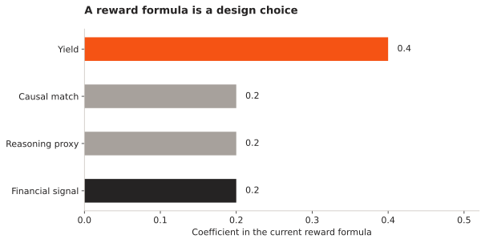

Manufacturing harness
A manufacturing agent needs more than a model. It needs process observations, permitted tools, an experiment record and a way to submit a change for review. I am researching how to build that working environment.
- Starting point
- Fab Yield Agent
- Refinery direction
- Architecture stage
- Evaluation
- Simulation before deployment
Which parts of a manufacturing workflow should an agent control, and what evidence should every proposed change carry?
A work environment around the model
The harness is the part that exposes observations, validates tool arguments, runs a permitted experiment and records its result. The model proposes an action. The surrounding system makes that action reproducible and reviewable.
The semiconductor gym is the starting implementation. The oil-refinery direction, listed as RefineOps in my projects, is an architecture project for custom inference and process workflows. I am keeping those scopes distinct: a simulator for chipmaking does not validate a refinery workflow.
The proposed loop
Read a timestamped process state with its units, missing values and allowed ranges.
| Component | Responsibility |
|---|---|
| Process interface | Typed observations, units, provenance and explicit missing-data handling. |
| Tool layer | Bounded actions with validation before a simulator or external tool runs. |
| Experiment record | Seed, model/configuration version, action, result and hypothesis. |
| Review | A human-readable proposal with source observations and the checks it passed. |
| Memory | Carry forward failed experiments and approved decisions without overwriting their source. |
What the prototype taught us about feedback
I checked the current Fab Yield Agent reward code rather than copying its older README table. It combines a yield score, bottleneck matching, a reasoning-length proxy and a financial signal. The coefficients below describe that implementation, not a measured increase in manufacturing performance.

This exposes two useful limitations. Matching a simulator’s hidden bottleneck is not proof that an agent has inferred a real cause. Rewarding the length of a reasoning field is also only a proxy. I want to replace these shortcuts with checks that connect a proposed cause to the intervention and its observed effect.
Narrow the first manufacturing task
The next experiment should choose one workflow, define its allowed actions and compare an agent-assisted run with a fixed policy and manual tool use. I would measure completed tasks, invalid proposals, experiment cost and the effort needed to review the final recommendation.
For the refinery direction, the architecture document and actual process interfaces still need to define that workflow. No plant connection, production deployment or refinery efficiency improvement is claimed. The useful near-term deliverable is a reproducible simulation and a complete action record.
References and project records
- Fab Yield Agent source
The implemented starting environment.
- Current reward and episode code
Pinned source for the coefficient figure and implementation review.
- OpenEnv
Environment interfaces for agent reinforcement learning.
- Reflexion
Related work on retaining feedback across attempts.
- RefineOps project scope
The separate oil-refinery architecture direction.